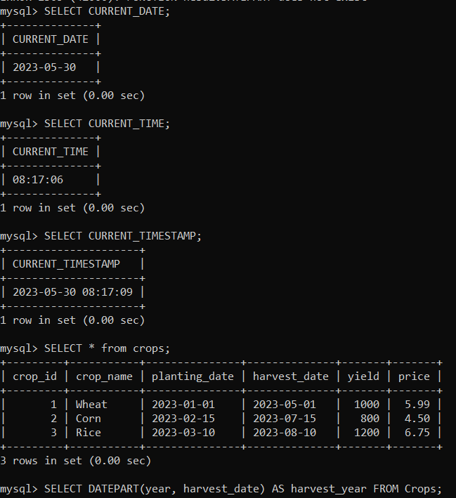
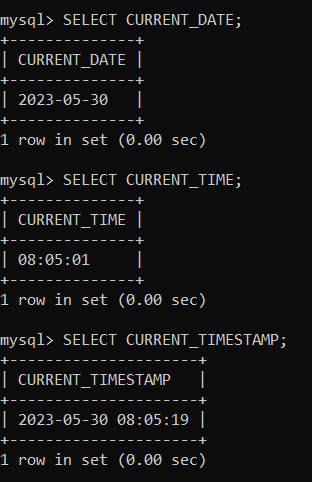

Date Functions
SQL provides various date functions that allow you to manipulate and extract information
from date and time values. Here are some commonly used date functions in SQL:
1.CURRENT_DATE: Returns the current date.
2.CURRENT_TIME: Returns the current time.
3.CURRENT_TIMESTAMP: Returns the current
date and time.
4.DATEPART: Extracts a specific part (such as year,
month, day, hour, minute, etc.)
from a date or time value.

